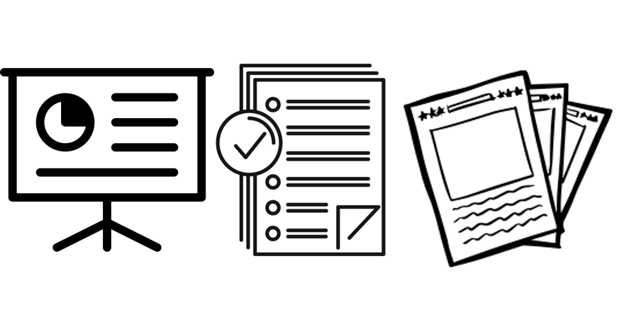

Preprints, Publications, and Presentations of Subir Majumder
Publications, Preprints, Presentations & Posters

Note: The contents of the preprints may significantly change compared to their published versions.
40. L. Xie, and S. Majumder, "The Role of Electric Grid Research in Addressing Climate Change," presented as a poster in PSERC annual meeting 2024, Dec., 2024. [Poster]
39. S. Majumder, "Behavior of Large Cryptocurrency-Mining Firms in Electricity Markets: A Texas Econometric Analysis," Energy & Power Group Seminar, in Texas A&M University, Sept. 2024. [Presentation][Video]
38. S. Majumder, "Operational Control of the Power System in the advent of Wildfire," Panel Session presentations for the 2024 IEEE PESGM, Jul. 2024. [Presentation][Data for Slide7]
37. S. Majumder, I. Aravena, and L. Xie, "An Econometric Analysis of Large Flexible Cryptocurrency-mining Consumers in Electricity Markets." [Publication][Preprint]
36. L. Xie, S. Majumder, T. Huang, Q. Zhang, P. Chang, D. J. Hill, and M. Shahidehpour, "The Role of Electric Grid Research in Addressing Climate Change," accepted for publication in Nature Climate Change. [Publication][Preprint]
35. M. Zeid, S. Majumder, H. Ibrahim, P. Enjeti, L. Xie, C. Tian, "Predicting DC-Link Capacitor Voltage and Current Ripple in AC-DC Rectifier Circuits Using Fine-Tuned Large Language Models," in IECON. [Preprint]
34. Jaewon Kim, Hasan Ibrahim, Subir Majumder, Prasad Enjeti, and Le Xie, "Secure Monitoring and Control of Solar Power Distribution System through Dynamic Watermarking," presented as a poster in Co-op Cyber Tech, Arlington, VA, Jun. 2024. [Poster]
33. S. Majumder, L. Dong, F. Doudi, Y. Cai, C. Tian, D. Kalathil, K. Ding, A.A. Thatte, and L. Xie, "Exploring the Capabilities and Limitations of Large Language Models in the Electric Energy Sector," Joule. [Publication][Preprint]
32. A. Samanta, S. Majumder, H. Ibrahim, P. Enjeti, and L. Xie, "EMT Model of Cryptocurrency Mining Loads to analyze their LVRT Capability," Accepted for publication in IEEE PES-GM 2024. [Publication][Preprint]
31. S. Majumder, P. Fu, and L. Xie, "A mechanism to account for locational carbon impact in electricity markets," presented in Texas A&M Conference on Energy, 2023, Sept. 2023. [Abstract]
30. D. Kim, S. Majumder, and L. Xie, "Line-Post Insulator Fault Classification Model using Deep Convolutional GAN-based Synthetic Images," in NAPS, 2022. [Publication][Preprint]
29. S. Majumder, A. Vosughi, H. M. Mustafa, T. E. Warner, and A. K. Srivastava, "On the Cyber-Physical Needs of DER-based Voltage Control /Optimization Algorithms in Active Distribution Network,"IEEE Access, [Publication (OA)]
28. S. U. Kadir, S. Majumder, A. K. Srivastava, A. Chhokra, H. Neema, A. Dubey, and A. Laszka, "Reinforcement Learning based Proactive Control for Transmission Grid Resilience to Wildfire," IEEE Trans. Indus. Inform. [Publication][Preprint]
27. S. Majumder, S. A. Khaparde, A. P. Agalgaonkar, S. V. Kulkarni, A. K. Srivastava, and S. Perera, "Chance-Constrained Pre-Contingency Joint Self-Scheduling of Energy and Reserve in a VPP," IEEE Trans. Power Syst. [Publication][Preprint][Presentation]
26. S. Majumder, N. Patari, A. K. Srivastava, P. Srivastava, and A. M. Annaswamy, "Epistemology of voltage control in DER-rich power system," Elec. Power Syst. Res., vol. 214, Art. No. 108743, Jan. 2023. [Publication][Preprint]
25. S. Majumder, "Premium Power Investment Strategy utilising the Economy of Scale of Custom Power Devices," Elec. Power Syst. Res., vol. 214 Art. No. 108743, Jan. 2023. [Publication][Preprint]
24. P. S. Sarker, S. Majumder, Md. F. Rafy, A. K. Srivastava, "Impact Analysis of Cyber-Events on Distributed Voltage Control with Active Power Curtailment," in PEDES, 2022. [Publication][Preprint][Presentation]
23. A. Srivastava, J. Adan, S. Majumder, Y. Wu, A. Annaswamy , R. Haider, M. Josevski, A. Monti, T. Heins, S. K. Gurumurthy, "Data-Driven Secure Holonic control and Optimization for the Networked CPS (aDaptioN)," 2022 NSF Cyber-Physical Systems PIs' Meeting, Nov. 2022. [Poster]
22. S. Majumder, A. K. Srivastava, "Resilience-driven Integration of Distributed Energy Resource (DER): Coordinating DER Services for Value," IEEE Smart Grid eBulletin, Nov. 2022. [Publication (OA)]
21. S. Majumder, A. K. Srivastava, "Resilience-driven Integration of Distributed Energy Resource (DER): Holistic Value Analysis," IEEE Smart Grid eBulletin, Sept. 2022. [Publication (OA)]
20. J. Adan, S. Majumder, and A. K. Srivastava, "Distributed Optimisation Approaches with Discrete Variables in the Power Distribution Systems," in NAPS, 2022. [Publication][Preprint][Presentation]
19. A. Vosughi, A. Tamimi, A. B. King, S. Majumder, and A. K. Srivastava, "Cyber-physical Vulnerability and Resiliency Analysis for DER Integration: A Review, Challenges and Research Needs," Renew. Sust. Energ. Rev., vol. 168, Art. no. 112794, 2022. [Publication][Preprint]
18. S. Majumder, G. Kandaperumal, S. Pandey, A. K. Srivastava, and C. Koplin, "Pre-Event Two-Stage Proactive Control for Enhanced Resiliency," IEEE Access, vol. 10, pp. 83281-83296, 2022. [Publication (OA)][Video]
17. A. K. Srivastava, S. Konar, J. Adan, S. Majumder, "Distributed Optimization for the Resilient Power Grid," Panel Session presentations for the 2022 IEEE PESGM, Jul. 2022. [Presentation]
16. A. K. Srivastava, S. Pannala and S. Majumder, "Real-Time Resiliency Monitoring and Decision Support (RT-RMOD)," Panel Session presentations for the 2022 IEEE PESGM, Jul. 2022. [Presentation]
15. A. K. Srivastava and Subir Majumder, "Proactive Control to Minimize impact of Extreme events on the Power Grid," Super Session presentations for the 2022 IEEE PESGM, Jul. 2022. [Presentation]
14. S. Knudsen, S. Majumder, and A. K. Srivastava, "Securely implementing and managing neighborhood solar with storage and peer to peer transactive energy," in Cigre Annual Meeting., Aug. 2022.[Preprint][Poster]
13. G. Kandaperumal, S. Majumder, and A. K. Srivastava, "Microgrids as a Resilience Resource in the Electric Distribution System," book chapter in Elsevier- Electric Power Systems Resiliency - Modelling, Opportunity and Challenges, Paperback ISBN: 9780323855365, 1st Ed., Jul. 2022. [Chapter][Preprint]
12. P. S. Sarker, N. Patari, B. Ha, S. Majumder, and A. K. Srivastava, "Cyber-Power Testbed for Analyzing Distributed Control Performance during Cyber-Events," in MSCPES, May 2022. [Publication][Preprint][Presentation]
11. S. Majumder, S. A. Khaparde, V. Pradhan, A. P. Agalgaonkar, and S. Perera, "Optimal Voltage Sag Mitigation Solution Provision using Customers Approximate Marginal Willingness-to-Pay Function," in IEEE PowerTech, Jun. 2021. [Publication][Preprint][Presentation]
10. S. Majumder, S. A. Khaparde, A. P. Agalgaonkar, S. V. Kulkarni, and S. Perera, "Graph Theory based Voltage Sag Mitigation Cluster Formation employing Graph-Partitioning Theory utilising Dynamic Voltage Restorers in Radial Distribution Networks," IEEE Trans. Power Del., vol. 37, no. 1, pp. 18-28, Dec. 2020. [Publication][Preprint]
9. S. Majumder, A. P. Agalgaonkar, S. A. Khaparde, S. Perera, S. V. Kulkarni, and P. P. Ciufo, "Allowable Delay Heuristic in Provision of Primary Frequency Reserve in the Future Power System," IEEE Trans. Power Syst., vol. 35, no. 2, pp. 1231-1241, Aug. 2019. [Publication][Preprint]
8. S. V. Kulkarni, "Techno-Economic Analysis of Voltage Sag Mitigation with Renewable Energy Sources and Storage devices," Panel Session presentations for the 2019 PESGM (based on the research conducted in my PhD), Jul. 2019. [Presentation]
7. S. Majumder, S. A. Khaparde, A. P. Agalgaonkar, S. V. Kulkarni, S. Perera, and P. P. Ciufo, "Hybrid Storage System Sizing for Minimum Daily Variability Injection," in TENSYMP, Jun. 2019. [Publication][Preprint]
6. S. Majumder, A. P. Agalgaonkar, S. A. Khaparde, P. P. Ciufo, S. Perera, and S. V. Kulkarni, "Allocation of Common-Pool Resources in an Unmonitored Open System," IEEE Trans. Power Syst., vol. 34, no. 5, pp. 3912-3920, Sept. 2019. [Publication][Preprint]
5. S. Majumder, S. A. Khaparde, A. P. Agalgaonkar, P. P. Ciufo, S. Perera, and S. V. Kulkarni, "DFT-Based Sizing of Battery Storage Devices to Determine Day-Ahead Minimum Variability Injection Dispatch with Renewable Energy Resources," IEEE Trans. Smart Grid, vol. 10, no. 1, pp. 626-638, Jan. 2019, also in 2018 IEEE PESGM. [Publication][Preprint][Presentation]
4. S. Majumder, R. M. Shereef, and S. A. Khaparde, "Two-Stage Algorithm for Efficient Transmission Expansion Planning with Renewable Energy Resources," IET Renew. Energy, vol. 11, no. 3, pp. 320-329, Feb. 2017. [Publication (OA)]
3. S. Majumder, S. A. Khaparde, V. Pradhan, S. V. Kulkarni, A. P. Agalgaonkar, S. Perera, and P. P. Ciufo, "A Critical Review on the Methods for Calculating the Risk of Process Failure because of Voltage Sags," in POWERCON, Oct. 2016. [Publication][Preprint]
2. S. Majumder and S. A. Khaparde, "Revenue and Ancillary Benefit Maximisation of Multiple Non-collocated Wind Power Producers Considering Uncertainties," IET Gen. Transm. Distrib., vol. 10, no. 3, pp. 789-797, Jul. 2016. [Publication][Preprint]
1. N. V. Vigil, S. Majumder, V. Pradhan, V. Padmini and S. A. Khaparde, "Transmission expansion planning with variable wind source," in NPSC, 2014. [Publication (OA)]